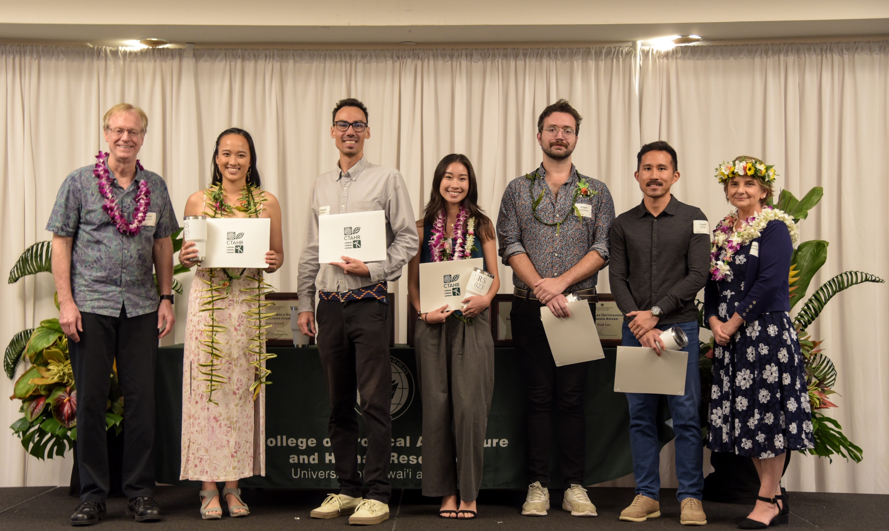

Recent Highlights
🌿🌿🌿🎄🌿🌿🌿🎄🌿🌿🌿🎄🌿🌿🌿
Dec 2023
Wrapped up a busy end of the year with two wonderful updates.
I presented along with my Principal Investigator (PI), Dr Kirsten Oleson, at the annual Hawaii SeaGrant Research Symposium our SeaGrant funded research on Using natural capital accounting to embed climate impacts into routine decision-making. I went through the basics of UN SEEA EA framework for ecosystem accounting, while going through some of our exciting preliminary results and possible policy applications!

Super proud that it went really well and actually elicited some genuine interest, gauging from the response, I do think we need to double up on our educational/ communication efforts, just so people have the necessary understanding to truly grapple with how our economic lives are conducted and especially in relation to the environment.
Here are some of the (big picture) highlights in case you missed it!


Attended the wonderful Piʻo summit on Dec 13, and I definitely left seeing the Piʻo (rainbow of hope in the storm)!
Interdisciplinary research (or indeed interdisciplinary anything) is HARD, primarily because Science is not designed to see the WHOLE.
I think humans have a fundamental need to want to stick to tribes and silos, and have a desire to create a whole new thing instead of go through the arduous effort of fixing something deeply broken. And because of those drives, we end up with a thousand new revolutionary frameworks claiming to be the new panacea.
This Circular Economy (CE) Piʻo Summit is certainly not that. But it is also telling for who was not in attendance or werenʻt invited. I left more energised to want to do the hard work and see the Piʻo amidst all the pain and hardness around.
May you find strength this holiday season and beyond to truly kākoʻo, even when the struggle gets real.
🌿🌿🌿🎄🌿🌿🌿🎄🌿🌿🌿🎄🌿🌿🌿
Nov 2023
I will yet again be talking about our Ecosystem Accounting work, hopefully this will be as informative and fun as last years.
I am experimenting with a very non-conventional approach to this talk, so it is definitely one to catch, no prior knowledge or accounting/ economics experience required!

Register here for the Zoom info!

Itʻs a wrap! Now for an awkward photo. Mahalo to those who turned up, or tuned in online!
Jun 2023 (cont’d)
Come check out the 30th (anniversary) Hawai’i Conservation Conference happening from June 26-29! I will be presenting a poster for our lab project “Coastal Ecosystem Accounting for Hawai’i” on June 28 from 5:30-7:30pm. Let me know if you are keen to learn more! .png)
Jun 2023
I will be delivering an oral presentation on my preliminary research titled, “Cultural Ecosystem Services and Discounting” at the 6th International Ecosummit, in Gold Coast, Australia from 13-17 June 2023. The research unravels just how much we undervalue Natural Capital using existing tools borrowed from finance, and proposes new empirical tools to redress that. It also proposes a novel way to better estimate Cultural Ecosystem Services through time payment vehicles instead of money.
Separately, I will also be assisting in an oral presentation titled, “Coastal Ecosystem Accounting for Hawai’i” at the same conference. This research is part of the larger NCA project led by my PI (Dr Kirsten Oleson) in the Oleson Lab.
For those in attendance, our presentations will be in Session 37 and 21 respectively (conference program)!
Apr 2023
